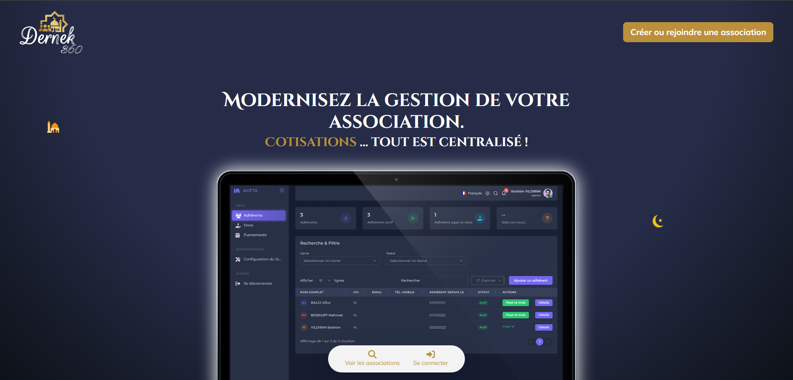
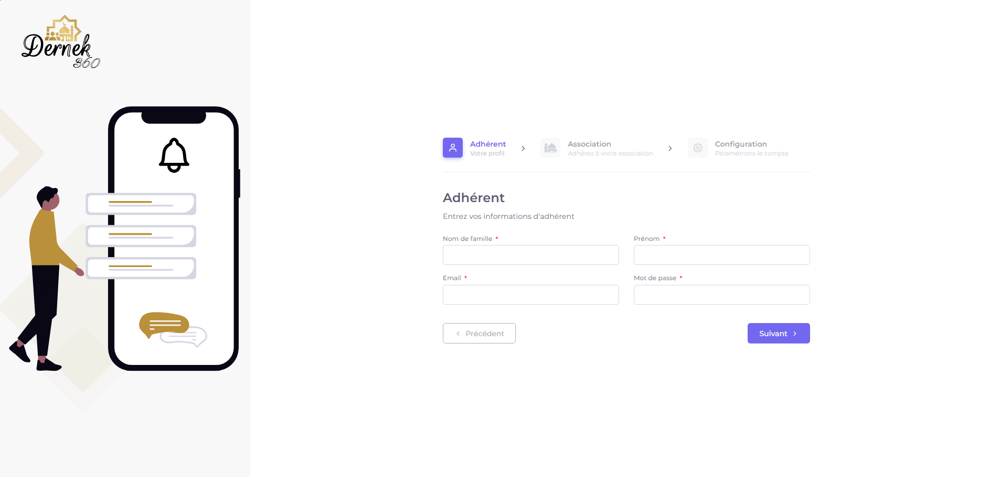
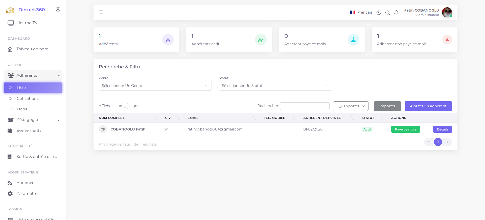

Projet Dernek360
Dernek360 est une application web développée avec Symfony pour faciliter la gestion de plusieurs associations depuis une interface unique. L'application permet de gérer des adhérents, des cotisations, des événements et les données spécifiques à chaque association, tout en offrant une séparation claire entre les différentes entités. J'ai contribué à ce projet lors de mon stage de 2ème et 3ème année de BUT informatique.
Le projet devait répondre aux besoins spécifiques d'une unique association, aujourd'hui, il a évolué pour devenir une solution plus générique et adaptable à différentes structures associatives, tout en conservant une interface claire et fonctionnelle.
Screenshots


